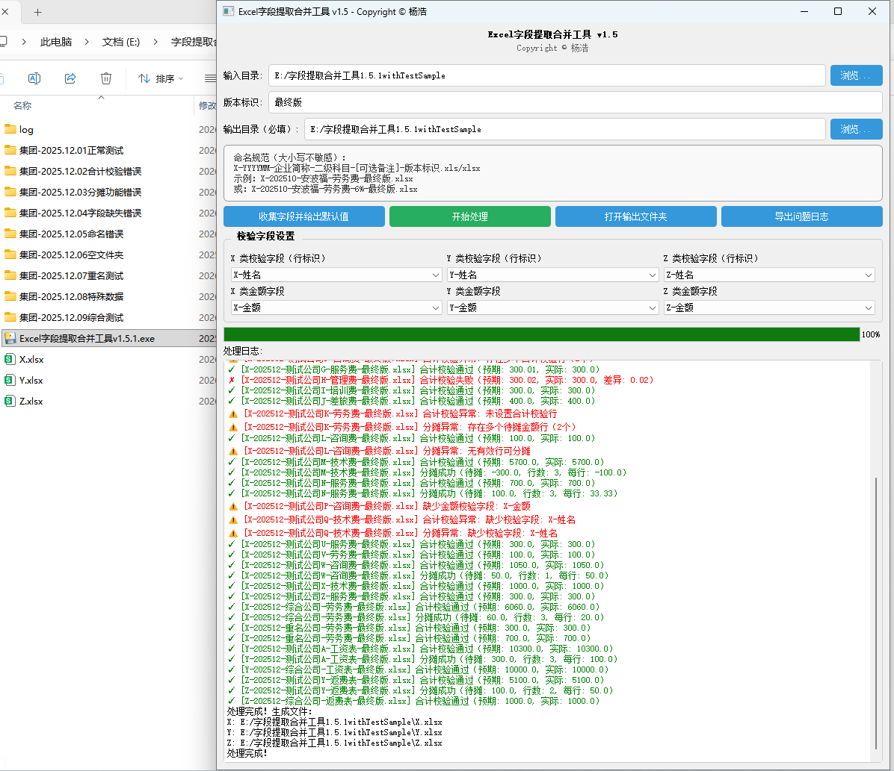
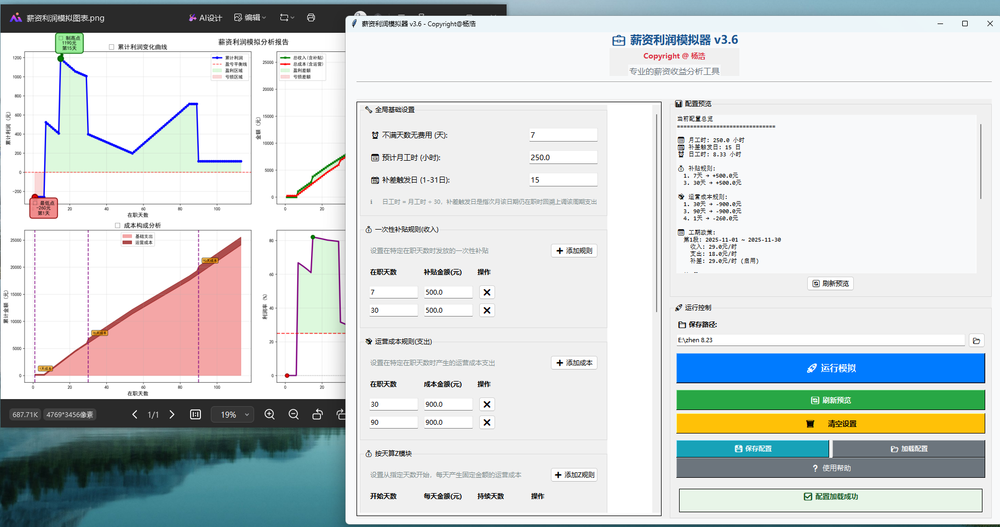

具备从数据清洗、建模、分析到业务决策的全链路闭环能力。
擅长利用Python与BI工具挖掘数据价值，驱动业务降本增效。
拥有6年数据分析与管理经验，硕士毕业于澳洲国立大学（QS Top 50）。曾任职于众腾集团（财务BP经理）及德勤（审计），具备极强的商业敏感度与合规意识。
擅长搭建UE单体经济模型与项目预算分析模型，曾通过Python开发自动化核算脚本，显著降低试错成本。持有Tableau Specialist认证及CICS国际注册内部控制师资格。
商业洞察与技术赋能的实战展示

痛点：多来源数据字段混乱，人工处理耗时且易错。
成果：开发Python脚本，自动识别并提取关键字段，将处理效率提升90%以上，低成本验证数字化逻辑。

痛点：项目报价与成本估算缺乏精确模型支持。
成果：搭建差异化盈利模型，界面友好，业务人员经简单培训即可独立操作，精准测算毛利与净利。
财务管理 硕士 | 2017 - 2018
QS Top 50金融学 本科 | 2013 - 2017
双一流 211